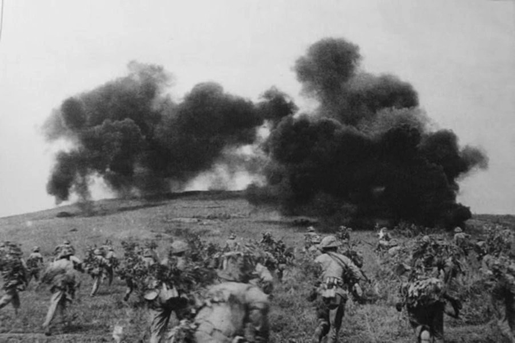
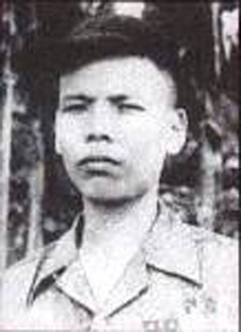
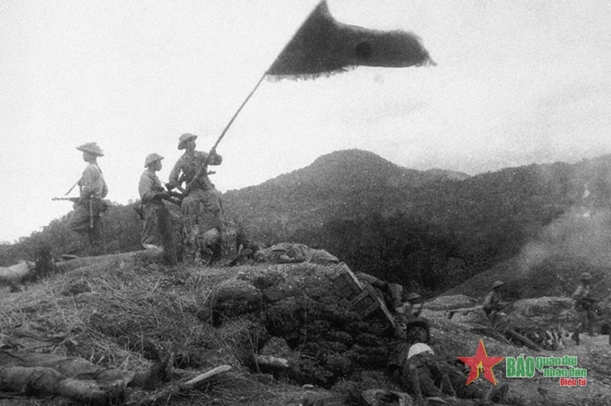

Trần Can - Anh hùng cắm cờ trên Cứ điểm Him Lam
Trần Can sinh năm 1931, quê ở xã Sơn Thành, huyện Yên Thành, tỉnh Nghệ An. Từ nhỏ Trần Can đã rất thích đi bộ đội để được cầm súng giết giặc, cứu nước. Lớn lên, ba lần anh xung phong tình nguyện nhập ngũ nhưng vì sức khỏe yếu, các đơn vị bộ đội đều từ chối. Mãi đến lần thứ tư anh mới được chấp nhận.
Từ khi vào bộ đội, Trần Can chiến đấu rất dũng cảm, mưu trí. Trong mọi tình huống dù khó khăn ác liệt, anh đều kiên quyết dẫn đầu đơn vị vượt lên, hoàn thành xuất sắc nhiệm vụ.
Năm 1952, sau khi chỉnh huấn chính trị, biên chế, trang bị, các đại đoàn cơ động được biên chế thống nhất theo quy định của Bộ Tổng Tham mưu. Mỗi tiểu đoàn bộ binh có một đại đội chủ công gồm bốn trung đội. Việc học tập quân sự cũng thống nhất theo tài liệu của Bộ Tổng Tham mưu.
Về học đánh công sự kiên cố, các đơn vị học đánh cứ điểm kiên cố, có sinh lực trên dưới một tiểu đoàn địch, học đánh vận động tiêu diệt những binh đoàn cơ động lớn. Có diễn tập thực binh, bắn đạn thật, phân đội hỏa lực và binh chủng phối thuộc. Có thể nói, chỉnh huấn và chấn chỉnh về tổ chức, huấn luyện năm 1952 là bước ngoặt đối với việc xây dựng lực lượng vũ trang. Trung đoàn 209 Đại đoàn 312 của Trần Can đi vào chiến dịch Tây Bắc trong niềm tin và sức mạnh mới.
Trần Can - Anh hùng cắm cờ trên Cứ điểm Him Lam
Lực lượng xung kích của bộ đội ta lợi dụng địa hình, địa vật tiến sát vào các vị trí của địch trên đồi Him Lam để tấn công và tiêu diệt cứ điểm này thuộc tuyến phòng thủ phía bắc của địch, ngay trong ngày mở đầu chiến dịch, chiều 13-3-1954. Ảnh tư liệu/TTXVN

Tây Bắc là chiến trường có tầm quan trọng về chiến lược trên chiến trường Bắc Bộ lúc đó. Chiếm Tây Bắc, địch đã tạo ra thế thường xuyên uy hiếp căn cứ địa Việt Bắc của ta. Giải phóng được Tây Bắc, chúng ta sẽ mở rộng và củng cố được căn cứ địa Việt Bắc. Mục đích của chiến dịch này là tiêu diệt sinh lực địch, tranh thủ nhân dân Tây Bắc, giải phóng một bộ phận đất đai. Ý nghĩa của chiến dịch lớn lao là vậy, Trần Can nóng lòng được tham gia.
Ngày 10-10-1952, toàn đại đoàn vượt sông Thao chia làm hai cánh. Một cánh gồm Trung đoàn 141 vào phối thuộc vượt Khe Lóng, nhanh chóng tiến vào tiêu diệt vị trí Sài Lương. Cánh thứ hai, Trung đoàn 209 của Trần Can theo hướng Bắc vượt đèo Nậm Bằng cao gần 2.000m, dọc đường tiêu diệt địch ở La Hầu Pèng, tiến vào bao vây tiêu diệt địch ở Nậm Mười, bản Tủ, bản Hoa.
Trận đánh ở bản Hoa, Trần Can làm nhiệm vụ xung kích, vừa có lệnh xung phong anh đã nhanh chóng cùng tiểu đội vượt qua cửa mở, dùng thủ pháo diệt một ụ súng địch rồi lập tức phát triển vào bên trong. Khi tiểu đội bị thương vong hết, Trần Can tự động sáp nhập với hai đồng chí của tiểu đội khác lập thành một tổ tiếp tục chiến đấu. Trần Can dẫn đầu tổ, diệt luôn ba ụ súng nữa và đánh thẳng vào sở chỉ huy địch, diệt cơ quan đầu não, bắt sống 22 tên, thu 17 súng các loại.
Trần Can - Anh hùng cắm cờ trên Cứ điểm Him Lam
Anh hùng Trần Can, ngày 7-5-1956, Trần Can được Chủ tịch nước truy tặng Huân chương Quân công hạng Nhì và danh hiệu Anh hùng lực lượng vũ trang nhân dân. Ảnh tư liệu

Trong chiến dịch Điện Biên Phủ, đơn vị Trần Can được giao nhiệm vụ tiêu diệt cứ điểm Him Lam. Him Lam là một trung tâm phòng ngự kiên cố nhất của địch. Vị trí này thuộc phân khu trung tâm, cách Mường Thanh 2,5km, có nhiệm vụ bảo vệ phân khu trung tâm Mường Thanh và án ngữ con đường từ Tuần Giáo đến Điện Biên Phủ.
Binh lực ở Him Lam có một tiểu đoàn lê dương tăng cường thuộc Lữ đoàn Lê dương số 13. Him Lam trước có năm mỏm, nay địch dùng máy ủi san đi còn ba mỏm, hình thành ba cứ điểm vừa yểm hộ cho nhau, vừa có thể độc lập tác chiến. Hỏa lực chia làm nhiều tầng khá vững chắc, nhiều hỏa điểm chéo, hỏa điểm lướt sườn. Giữa các hỏa điểm có hàng rào và bãi mìn ngăn cách. Hệ thống công sự phụ có bãi mìn và dây thép gai rộng từ 100m đến 200m. Cứ điểm nào cũng có hầm ngầm và lực lượng phản địch.
Tiến công một cứ điểm nằm trong tập đoàn cứ điểm mạnh đặt ra cho chỉ huy những vấn đề mới. Trước hết là trinh sát. Sau khi nhận nhiệm vụ, ngày nào đơn vị cũng đi trinh sát thực địa. Ban ngày lên đài quan sát để nghiên cứu Him Lam, ban đêm cán bộ tiếp cận. Muốn hiểu Him Lam cả ngoại vi và cả tung thâm phải đi từ nhiều hướng trong nhiều thời gian khác nhau rồi tổng hợp tình hình từ nhiều nguồn mới có thể kết luận chính xác.
Địch dò biết ý định của ta nên tổ chức phản kích quyết liệt. Đêm 11-3, ta vừa đào xong tuyến xuất phát xung phong thì sáng ngày 12 địch huy động bộ binh có xe tăng yểm hộ và xe xúc đất ra lấp. Lính công binh địch cài mìn trên những đoạn hào ta đã đào rồi dùng xe ủi lấp lại. Lấp xong, chúng cho pháo bắn, cho máy bay ném bom từ tuyến xuất phát xung phong tới cửa rừng. Các tuyến xuất phát xung phong của các mũi đều bị lấp.
Tối 12-3, tranh thủ sương mù chúng ta lại đào. Anh em phải gỡ từng quả mìn, moi đất lẫn với cành cây trên từng đọan hào. Địch dùng súng cối, pháo bắn chặn quyết liệt.
Ban ngày địch lấp hào, ban đêm chúng dùng đèn pha, pháo sáng cho những phân đội nhỏ tuần tiễu và đặt vọng gác ở ngoài hàng rào để ngăn chặn trinh sát ta thâm nhập. Trong hai đêm liền, các chiến sĩ ta không sao tiếp cận được chân rào. Nhiều chiến sĩ quân báo dũng cảm của chúng ta đã bị thương vong. Nhưng đến lúc này tình hình tung thâm Him Lam ra sao chúng ta vẫn chưa hiểu cụ thể. Không thể thông qua một kế hoạch tiến công khi chưa biết thật cụ thể kẻ thù. Chỉ huy đại đoàn giao nhiệm vụ cho trung đội trưởng quân báo phải tổ chức bộ đội thật gọn nhẹ, ngụy trang bằng đất. Lực lượng này sẽ tiến ra cửa rừng vào lúc địch đi lấy nước. Quan sát đường đến trận địa phục kích, phân công cho từng tay súng. Chọn độ 10 người có sức khỏe để bắt tù bình. Cử hai người vật một tên. Hẹn ba ngày phải hoàn thành.
Đúng ba ngày sau, trung đội trưởng quân báo dẫn lên sở chỉ huy đại đội tên Thiếu uý Giắc Cơ (trong trận này quân báo đại đoàn đã diệt hơn một tiểu đội địch, bắt ba lính lê dương).
Thế là căn cứ vào những điều ta nắm được đối chiếu với lời khai của Giắc Cơ ta thấy lời khai của tên này có thể tin cậy được.
17 giờ 10 phút ngày 13-3-1954, pháo của ta rót trúng Him Lam. Trong lúc pháo ta bắn áp chế, mọi việc đều diễn ra thuận lợi. Nhưng khi địch ở Him Lam hồi tỉnh sau cơn choáng váng và pháo địch phản pháo thì tình huống của ta trở nên khó khăn. Trước hết là hào giao thông chỗ này vừa nông lại không có hào nhánh nên vận động trong hào rất khó khăn, hỏa lực tiểu đoàn không thể nào vượt qua đội hình xung kích lúc này đã đứng chật trong lòng hào để chuẩn bị xung phong. Trước tình hình đó, phân đội trợ chiến của Tiểu đoàn 11 đã nhảy khỏi hào, bất chấp hỏa lực địch, tiến gần sát hàng rào nơi quy định cho trận địa hỏa lực tiểu đoàn. Phải bảo đảm cho bộc phá mở cửa. Càng chần chừ, thương vong càng cao.
17 giờ, Trung đoàn 141, các tổ hỏa lực đã lên sát đồn đang dùng hỏa lực bản thân kiềm chế lỗ châu mai, yểm hộ cho bộc phá mở cửa.
Trên hướng Trung đoàn 909 đã chiếm lĩnh xong trận địa, hỏa điểm 1 và 2 của địch đã bị sơn pháo ta tiêu diệt ngay từ phút đầu, hỏa điểm 3 và 4 vẫn bắn ra trên hướng cửa mở. Tổ ĐKZ của tiểu đoàn đã anh dũng tiêu diệt hai hỏa điểm này, 18 phút sau cửa mở thông, xung kích tràn lên đánh thẳng vào tung thâm.
Tiểu đội trưởng Trần Can chỉ huy tiểu đội nhanh chóng chiếm lô cốt đầu cầu. Chiếm xong, Trần Can chỉ huy một tổ đánh lô cốt số 6 rồi đánh lên lô cốt cố thủ. Súng máy địch quét sát đất. Trần Can cho một tổ dùng thủ pháo bí mật tiến sau lô cốt và dùng tiểu liên bắn nghi binh thu hút hỏa lực địch về phía mình. Địch bắn phía trước, không đề phòng phía sau. Sau vài loạt thủ pháo, khẩu trung liên trong lô cốt cố thủ im bặt. Chớp thời cơ, Trần Can nhảy lên khỏi giao thông hào cắm lá cờ “Quyết chiến quyết thắng” của Bác Hồ trao tặng lên nóc lô cốt cố thủ của địch ở cứ điểm thứ ba. Đó là lá cờ đầu tiên quân ta cắm trên cứ điểm địch tại chiến trường Điện Biên Phủ, trong chớp đạn lá cờ như giục giã bộ đội xông lên diệt địch. Trần Can chỉ huy tiểu đội đánh vào bên trong đánh các ngách trong lô cốt, bắt sống tên quan ba lê dương. Các tổ khác đánh chiếm các lô cốt xung quanh.
Trần Can - Anh hùng cắm cờ trên Cứ điểm Him Lam
Bộ đội ta giương cao cờ chiến thắng trên cứ điểm Him Lam vừa chiếm được trong trận mở màn Chiến dịch Điện Biên Phủ, chiều 13-3-1954. Ảnh tư liệu/TTXVN

Quân ta đang phát triển thì vấp phải một ổ đề kháng. Địch lợi dụng các bao cát bắn dọc theo hào. Các chiến sĩ dùng luôn một tù bình bắt nó gọi hàng. Một số tên địch ra hàng. Nhưng trên hướng phát triển của đơn vị vẫn còn một số tên địch ngoan cố chống cự. Hỏa lực ở đây quét là là mặt đất, Trần Can biết đây là hỏa điểm lợi hại. Anh đề nghị đánh bằng thuốc nổ. Trung đội trưởng đồng ý giao nhiệm vụ cho một chiến sĩ ôm bộc phá xông lên, chiến sĩ này đang tiến thì bị trúng đạn gục xuống, Trần Can định cử người thay thế thì chiến sĩ ấy đã vùng dậy. Đợi lúc mũi súng của địch quét sang hướng khác, anh trườn lên rồi vọt tiến về hầm ngầm. Một lát sau bộc phá nổ, hầm ngầm bị diệt, tiểu đội Trần Can bắt 25 tên, thu nhiều vũ khí. Him Lam, cụm cứ điểm mạnh nhất được phòng ngự hiện đại chưa từng có đã bị tiêu diệt.
Trong trận đánh điểm cao 507 khu trung tâm Mường Thanh, Trần Can đã dũng cảm dẫn đầu tiểu đội xông lên áp đảo địch, chiếm mỏm cột cờ. Địch bắn pháo dữ dội và cho quân đánh chiếm lại. Ta với địch giành giật nhau từng thước đất hết sức quyết liệt. Trần Can đã cùng đồng đội kiên quyết giữ vững và tiến công đánh bại 4 đợt phản kích của chúng. Địch lại xông lên trong đợt công kích thứ năm, chúng ném lựu đạn tới tấp trước khi xung phong.
Trần Can nhặt lựu đạn của chúng ném lại và chỉ huy anh em nhảy lên hào đánh giáp lá cà với địch. Cán bộ đại đội bị thương vong hết, bản thân anh cũng bị thương, nhưng Trần Can vẫn quyết tâm thay thế cán bộ đại đội chỉ huy đơn vị chiến đấu. Sáng hôm sau, Trần Can tập trung thương binh nhẹ lại động viên, chấn chỉnh tổ chức, củng cố lại trận địa. Địch lại phản kích dữ đội, hòng đánh bật quân ta giành lại cửa ngõ tiến vào Mường Thanh. Trần Can chỉ huy đơn vị đánh tan đợt phản kích của chúng, kiên quyết giữ vững trận địa tạo thế cho đơn vị tiến vào trung tâm Mường Thanh.
Trần Can đã hy sinh anh dũng khi chỉ huy bộ đội đánh vào sở chỉ huy của tướng Đờ Cát vào sáng ngày 7-5-1954 - ngày kết thúc Chiến dịch lịch sử Điện Biên Phủ.